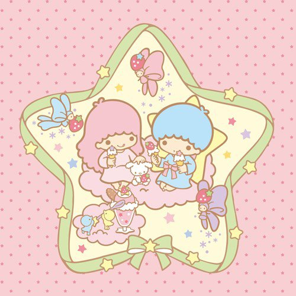
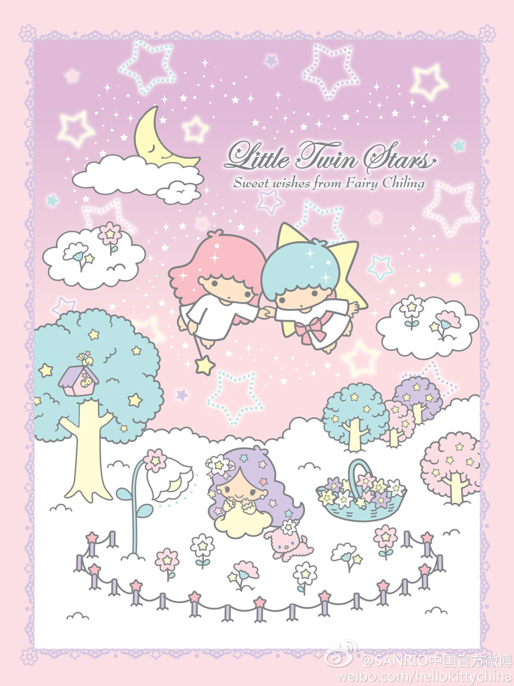
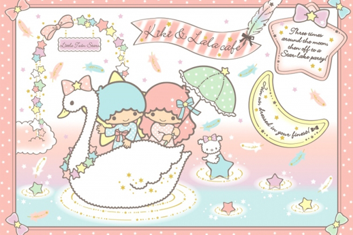
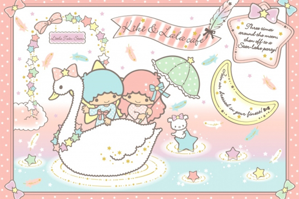

Ch04-10


 
kikilala咖啡廳
kikilala介紹

kikilala咖啡廳
kikilala介紹
可愛的雙子星KikiLala終於今年在大阪梅田開設全球唯一一間常設專賣店了。
過去在日本也開過不只一次LittleTwinStars的期間限定專賣店或咖啡廳，但是這次的不再是期間限定，
是真真正正的LittleTwinStars專賣店喔!!可愛療癒的Kiki&Lala 就在
「Kik&Lala 〜Yumeseiun Omoiyariboshi〜」キキ＆ララ 〜ゆめ星雲 おもいやり星〜
喜歡雙子星(リトルツインスターズ)的人去關西時絕對不能錯過!!!